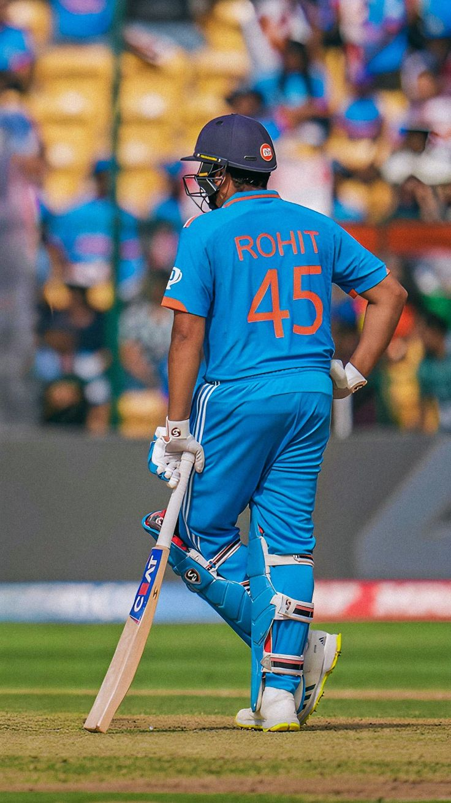
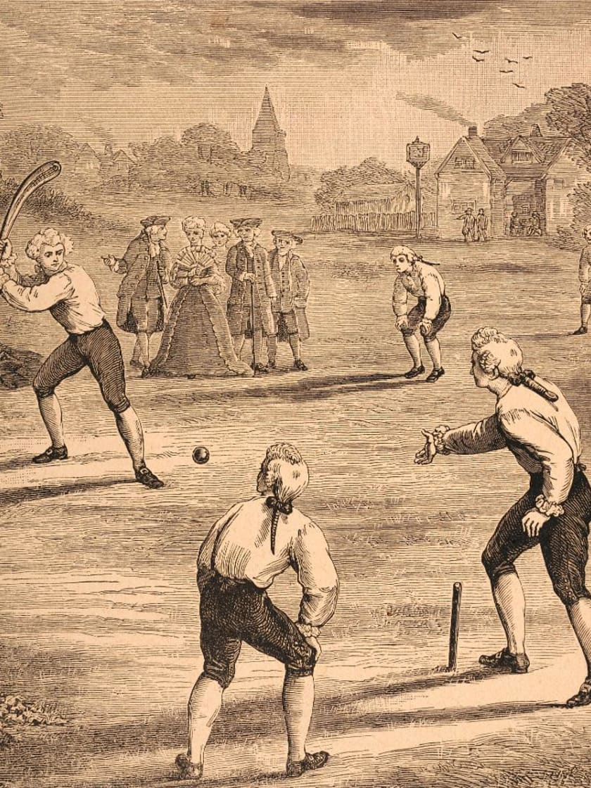
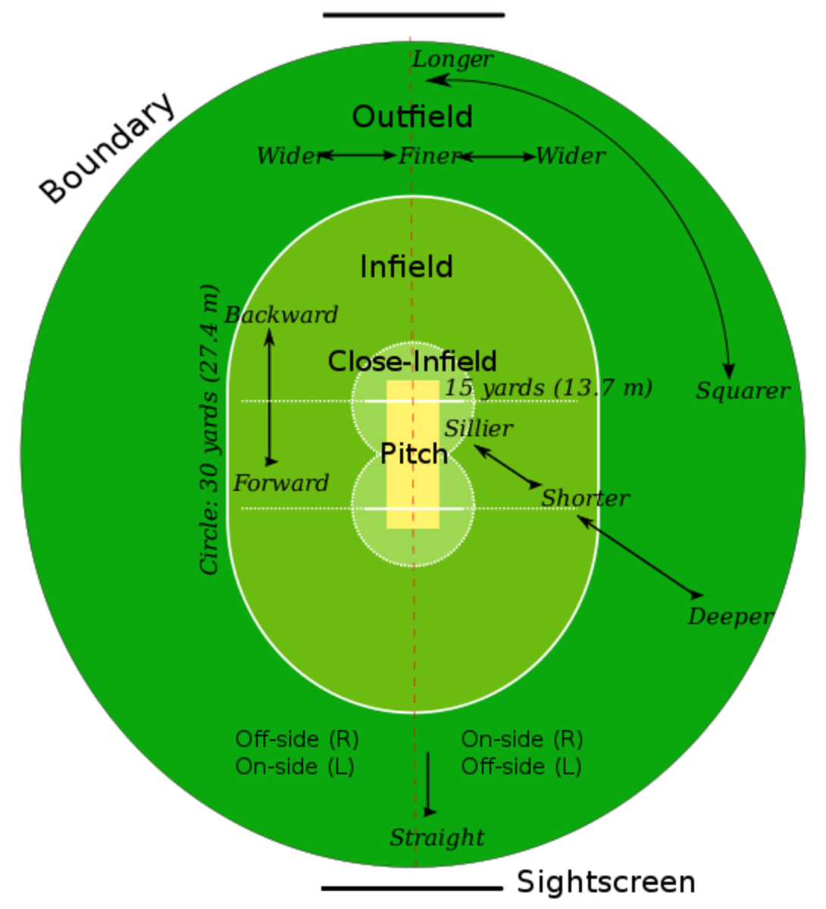
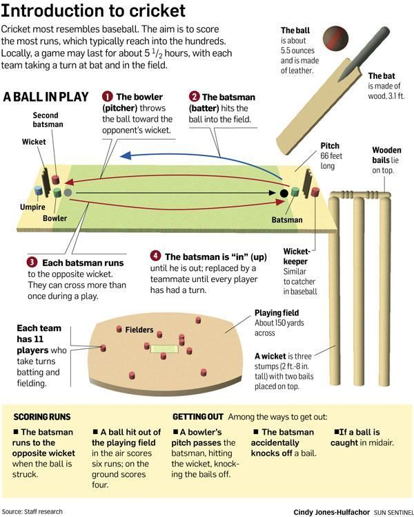

| What is Cricket? | |
|---|---|
|  |
Cricket is a bat-and-ball game played between two teams of eleven players on a field at the center of which is a 22-yard pitch with a wicket at each end. The game is played in various formats, including Test matches, One-Day Internationals (ODIs), and Twenty20 (T20) matches. Each team takes turns to bat and bowl, with the aim of the batting team being to score as many runs as possible, while the bowling and fielding team tries to restrict the runs and dismiss the batsmen. The game requires a combination of skills including batting, bowling, fielding, and strategic thinking. |
| History of Cricket | |
|  |
The history of cricket can be traced back to the 16th century in England. It was originally played by children in the Weald, an area of dense woodlands and clearings in south-east England. The first definite reference to cricket being played dates to 1598. By the 17th century, it had become an adult sport. Cricket's popularity grew rapidly in the 18th century, and it became England's national sport. The first international match was played in 1844 between Canada and the United States. The game's governing body, the International Cricket Council (ICC), was founded in 1909, and cricket has since evolved into a globally popular sport with various international competitions, including the prestigious Cricket World Cup. |
| How to Play Cricket | |
|  |
Cricket is played with a bat and ball on a rectangular 22-yard-long pitch in the center of a large field. The game involves two main roles: batsmen and bowlers. The batting side scores runs by hitting the ball bowled at the wicket with the bat, while the fielding side tries to dismiss the batsmen and limit the runs scored. A run is scored when the batsmen run to each other's end of the pitch. Boundaries score four runs if the ball hits the ground before reaching the boundary, or six runs if it reaches the boundary on the full (without touching the ground). The primary objective for the batsmen is to score as many runs as possible, while the bowlers aim to dismiss the batsmen by hitting the stumps with the ball or forcing an error. |
| Rules of Cricket | |
|  |
Cricket has a complex set of rules governing various aspects of the game, including batting, bowling, fielding, and scoring. Some of the key rules include: LBW (Leg Before Wicket): A batsman is given out LBW if the ball would have hit the stumps but was intercepted by any part of the batsman's body other than the bat. No-ball: A delivery is called a no-ball if it is bowled illegally, such as overstepping the crease, having an illegal bowling action, or bouncing more than twice before reaching the batsman. A no-ball results in a free hit for the batsman, where they cannot be dismissed in most ways. Wide: A delivery is called wide if it passes outside the batsman's reach and away from the stumps, making it difficult for the batsman to play a shot. Each wide ball adds an extra run to the batting team's score and requires the bowler to deliver an additional ball in the over. Powerplay: In limited-overs cricket, powerplay overs are a set number of overs during which specific fielding restrictions apply, allowing batsmen to score more freely. Fielding teams are limited in the number of fielders they can place outside the 30-yard circle. Cricket also involves various modes of dismissal, such as bowled, caught, run out, stumped, and more. Understanding these rules is essential for players and helps ensure the game is played fairly and competitively. |
| Player Name | Country of Origin | Runs | Type of League |
|---|---|---|---|
| Sachin Tendulkar | India | 15921 | International Test and ODI |
| Ricky Ponting | Australia | 13378 | International Test and ODI |
| Virat Kohli | India | 11867 | International Test, ODI, and T20 |
| Kumar Sangakkara | Sri Lanka | 14234 | International Test and ODI |
| Jacques Kallis | South Africa | 11579 | International Test and ODI |
© Sports Info. All rights reserved.